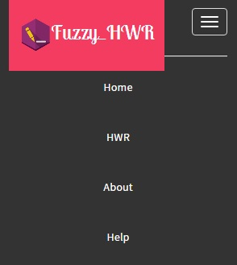
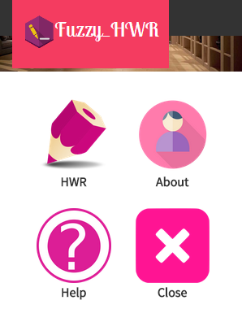
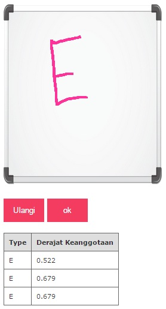

Bantuan
Cara menggunakan aplikasi ini ....
Pilih menu

Tombol Home

Tombol home untuk menampilkan secara umum Menu yang terdapat pada aplikasi ini seperti HWR, About, Help dan Close
Tombol Hwr

menampilkan canvas dan pengguna dapat menulis huruf di canvas lalu setelah itu akan keluar nilai derajat keanggotaan dari huruf tersebut dalam bentuk Tabel
Tombol About

halaman yang berisi informasi mengenai aplikasi Handwriting yang dibuat menggunakan text view dan terdapat tombol untuk kembali ke menu utama.